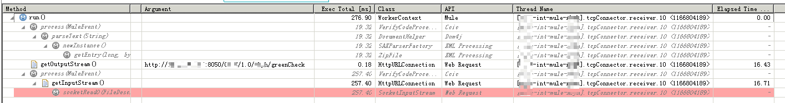

非HTTP应用或批处理应用如何进行全链路监控
在 2019-07-03 Wednesday 发布于 Observability 分类 • 1 min read
概述¶
在近期的应用性能问题分析中, 有时候会发现业务异常, 但是却无法在APM监控中找到相关的请求, 这可能是由于请求并非HTTP请求, 而可能是批处理或其他非HTTP请求导致的. 因此无法监控分析.
另外, 有些时候, 我们想要了解这类应用的:
- TCP解析 处理性能;
- 批处理中SQL性能...
那么就需要对非HTTP应用或批处理应用如何进行全链路监控. 下面介绍如何实现.
具体实现¶
接下来具体是通过Dynatrace AppMon 来实现对非HTTP应用或批处理应用的全链路监控.
监控前后的效果对比如下:
- 未监控之前: 看不到一条事务
- 监控后: 事务数巨细无遗
具体的实现是利用了Dynatrace的Entry Points(入口点)功能.
入口点概念¶
一个 entry point 就是一个新的PurePath(Dynatrace 里的名词, 可以理解为一条事务)的开始. 通过适当的配置, 放置一个适当位置的, 活动的sensor(传感器, Dynatrace监控的微探针)来实现. 对于基本用户, 自带的Sensor Packs(传感器包) (如: Servlet, WebService, ASP.NET... 它通过这些实现对HTTP协议请求的监控)就已经够用了.
具体实现步骤¶
如果一个事务没有被抓取到(比如: mule的tcp请求, 批处理..), 那么就需要以下操作步骤:
- (可选)做CPU采样, 找到入口点 方法
- 配置指定方法的传感器
- 将传感器设置为: 活动并且启动PurePaths.
- 热部署或重启Agent生效
找到入口点方法
如果你是一名开发, 且对你要监控的程序的 入口点 方法了如指掌, 那么只需要提供这个方法的完整名称就可以了. 比如:
- TCP请求的入口点可能是这样的:
com.xxxx.ap26.getaway.transport.tcp.protocol.AbstractTcpHeader - Batch Job的入口点可能是这样的:
org.*spring*framework.batch.thread.run
如果你不清楚入口点方法, 可以通过CPU采样的方式进行分析.
CPU采样可以分析当前运行的的Java或 .NET程序的线程堆栈, 并找出是否一某一个方法长时间运行或被频繁调用.
分析流程如下:
-
点击Dynatrace上的CPU 采样仪表图. 如下:
-
然后选择你要监控的应用Agent, 点击确定进行采样. 大约2分钟后停止采样.
-
采样完成后, 对样本进行分析. 如下:
-
如上图, 分析起来其实挺简单. 我们要找的 入口点 方法一般满足这么几个条件:
- 位于线程栈的较底层, 但是肯定在线程启动方法(如:
Thread.run)之后 - 被频繁调用(如果是tcp请求这类的话)
- 整个线程执行时间较长或CPU时间较长 (如批处理, 或tcp处理报文)
- 位于线程栈的较底层, 但是肯定在线程启动方法(如:
-
根据以上条件, 我们会找到那个 入口点方法, 这个方法应该和大神开发给出来的是一样的, 比如就是:
com.xxxx.ap26.getaway.transport.tcp.protocol.AbstractTcpHeader
配置该方法的传感器
找到该方法后, 直接在上图里选中该方法, 点击右键, 会弹出一系列菜单, 选择: 添加这个方法为传感器. 然后会弹出如下对话框:
将传感器设置为: 活动并且启动PurePaths
还是上图, 勾选红框中的: Allow to start PurePaths from this method (Entry Point)
配置好之后点击确定.
那么生效后, 就会对该方法进行字节码注入, 并且, 只要捕获到该方法, 就会认为该方法是一条事务的入口点, 后续该事务可能会:
- 调用其他任何方法
- 调用Web Service
- 执行SQL
- 抛出 Exception
- 输出 Error log
- ...
都会被完整的记录, 记录响应时间, 成功/失败, 相关参数, web service 请求, sql语句, 异常堆栈, log日志...应有尽有.
热部署或重启Agent生效
当然, 还是要使刚刚添加的方法监控规则生效才会有一切. 要使之生效, 有2种办法:
- Dynatrace Agent 热部署 (SUN JDK 1.6+)
- 重启Dynatrace Agent (IBM JDK 6)
效果¶
生效前, 可能看不到一条事务; 生效后, 可以看到每一条事务的细节. 
如下图所示:
